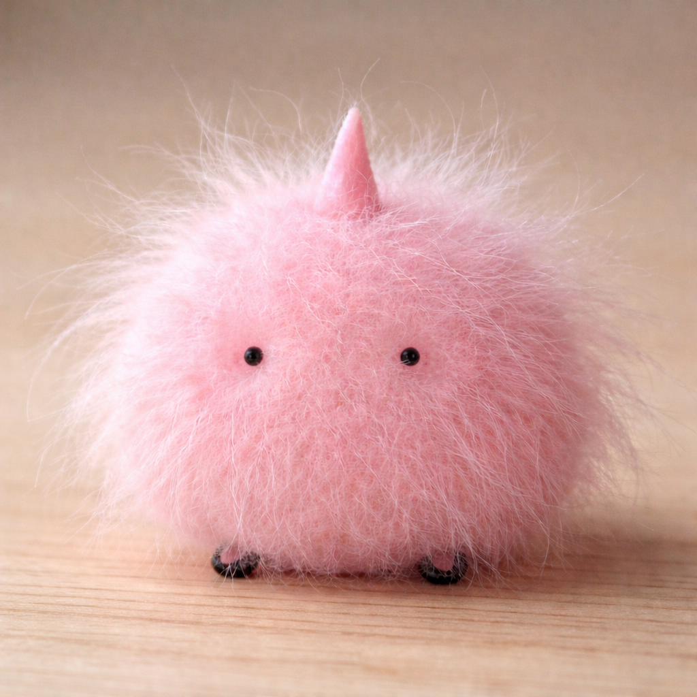

shit you can buy
Other Content
Snars-New Discovery

There is a new discovery of a newe creature that has been discovered called 'The snar', this article documents all the research ive done on the ones ive found.
I was on my pc until i started to have issues where it would keep crashing or getting hot, my components died because of how underpowerd they were but when
i investgated there were several of these creatures nesting and feeding on the electricity.I had to get them out before things could get worse so I stored
them in a 1L plastic jug from Tesco that i had which actually worked better than the other ones i tired because they like the density and shape of the plastic which
is really weird but anyways I looked for more of them and found there was many more feeding on my mains electricity.

I concluded two things, one is that they feed on energy
and two is that they like hot environments, especially if they have a lot of static. The 1L jugs i mentioned are good because they also can hybernate in cold storage too but you can only
store a few before there is an overload of energy, otherwise you could get a shock that is fatal. Another thing to note is when they consume a certain amount of energy, they can glow red which indicates they are supercharged, which means
it is extremely dangerous to touch.
I did research online and discovered there are also many other people who had to deal with snars, particularly in servers and data centers, which is where they keep their hive minds
because its so full of energy and heat, the lucky things is they have no animal or human rights so its fully legal to kill. Despite this, some people are nt happy and demand snars to be given
rights and protection from their government. Personally I dont like em because they dont serve nature any benefits and they are a liability to the
tech industry